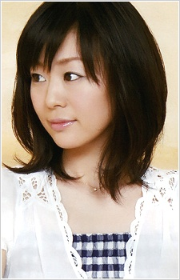

- Chrono Crusade
- Chrono Crusade: Azmaria's Lessons
- Tsubasa Chronicle
- Tsubasa Chronicle 2nd Season
|  |
Saeko Chiba is a Japanese voice actress and singer. She is affiliated with Space Craft Produce. Chiba took ballet when she was young with hope that she will joined the Takaruka Revue. However, she failed the entrance exam for Takarazuka Music School. After having a taste of being a voice actress and preferred voice acting then stage performing, Chiba decided to purse a full time seiyu. She got married on her 30th birthday. In 2011, Saeko gave birth to her first children.
|
|---|
| |
Azmaria Hendric |
|
Azmaria Hendric is one of the 7 heavenly apostles. She has a very beautiful soprano voice that heals people. she is very mature for her age. She is also kind and sweet but afraid to fight for herself. |
| Oruha |
|
Oruha is the singer at the Clover Lounge. She possesses a beautiful singing voice, and very talented. | |
| Satsuki |
|
Satsuki is one of the seven fighters of the City Hall. She studies medicine and is more no-nonsense than heartless. |
Go Back to Main Page |
Go Back to Homepage |
|
|
|
OR |
|